CTA: подчёркивание под стрелкой
Где: Главная → тёмное превью Agent Ops → ссылка Read the case внизу справа.
Открыть оригинал в полном размере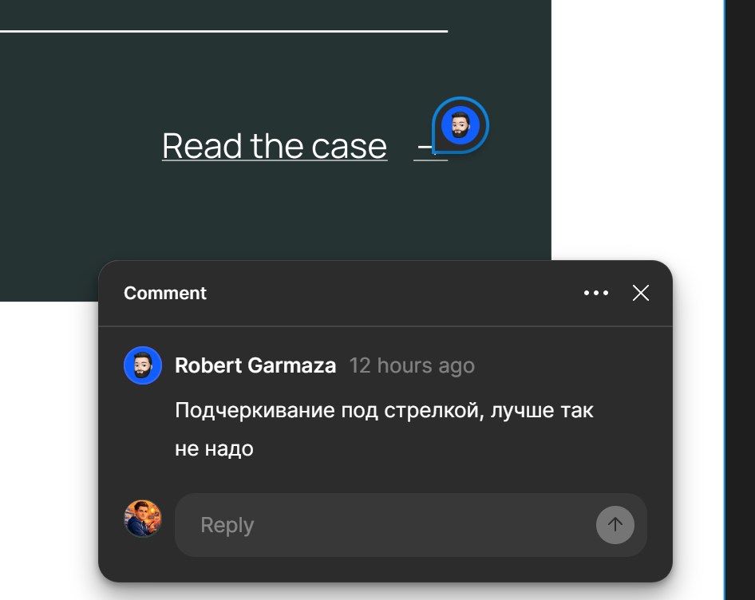
Требовалось: Убрать подчёркивание стрелки. Если у ссылки остаётся линия, она относится только к тексту и не выглядит вторым штрихом под иконкой.
Portal: номер рядом с заголовком и шрифт
Где: Главная → Partner Portal → маленький номер 02 у левого края крупного заголовка.
Открыть оригинал в полном размере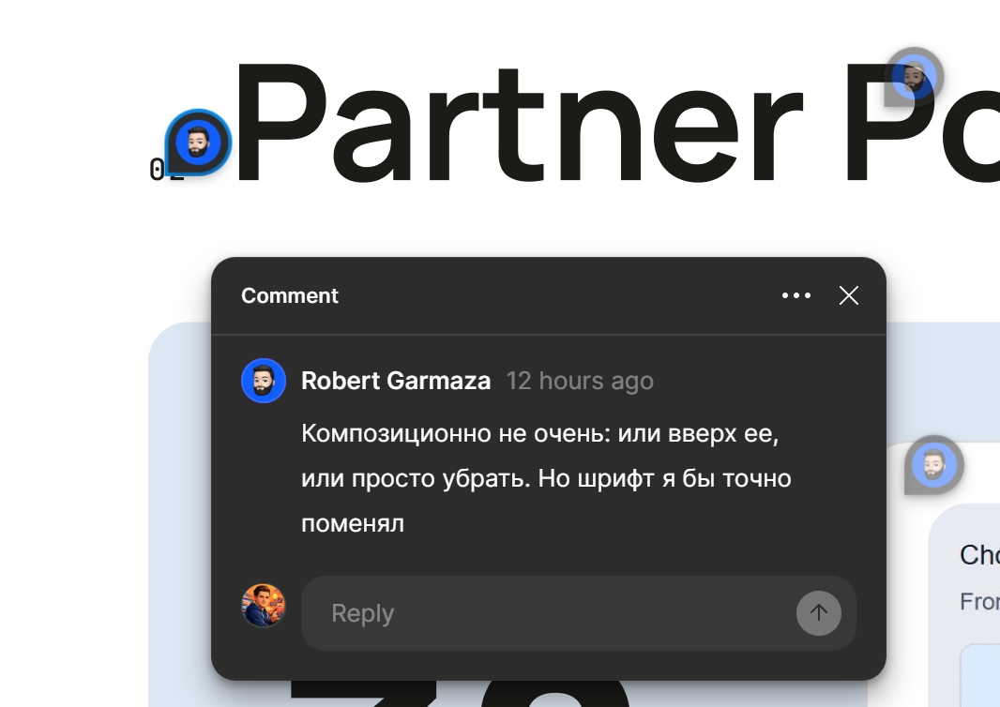
Требовалось: Перенести номер выше заголовка либо убрать его. Если номер остаётся, выбрать уместную пропорциональную типографику и осмысленное положение.
Увеличить общие заголовки
Где: Главная → крупные названия проектов; точка комментария на Partner Portal.
Открыть оригинал в полном размере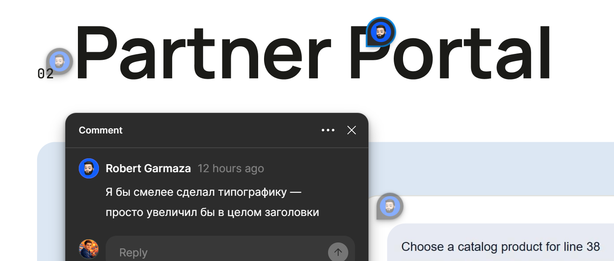
Требовалось: Увеличить заголовки в целом и усилить их роль в иерархии, сохраняя читаемость и переносы.
Portal: убрать Source row, число как якорь
Где: Главная → голубая сцена Partner Portal → над большим числом 38 находится SOURCE ROW.
Открыть оригинал в полном размере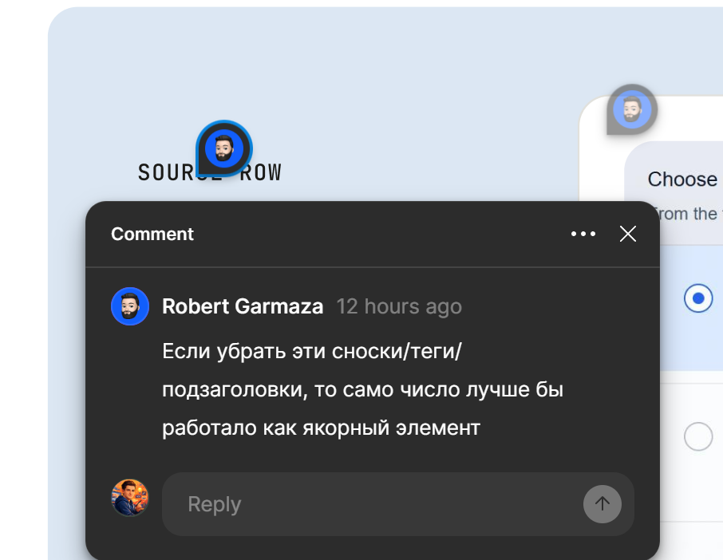
Требовалось: Убрать лишнюю служебную надпись над 38; оставить самому числу доминирующую роль и только необходимый смысловой контекст.
Скриншоты: карточка внутри карточки
Где: Главная → Partner Portal → белая внешняя карточка вокруг скриншота, внутри которого уже есть собственная светлая карточка.
Открыть оригинал в полном размере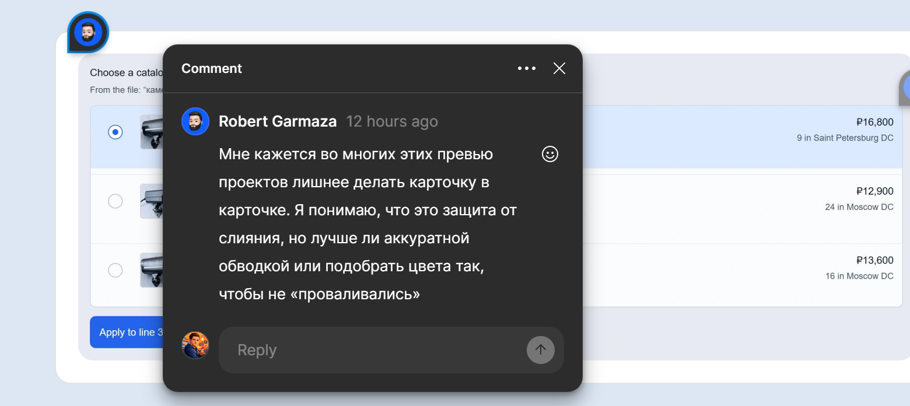
Требовалось: Снять ненужную внешнюю вложенную рамку/паддинги, отделить UI аккуратной границей или контрастом сцены. Проверить повторение общего приёма в остальных превью.
Portal: более контрастные/насыщенные цвета
Где: Главная → фон сцены Partner Portal, голубые/светлые поля вокруг UI.
Открыть оригинал в полном размере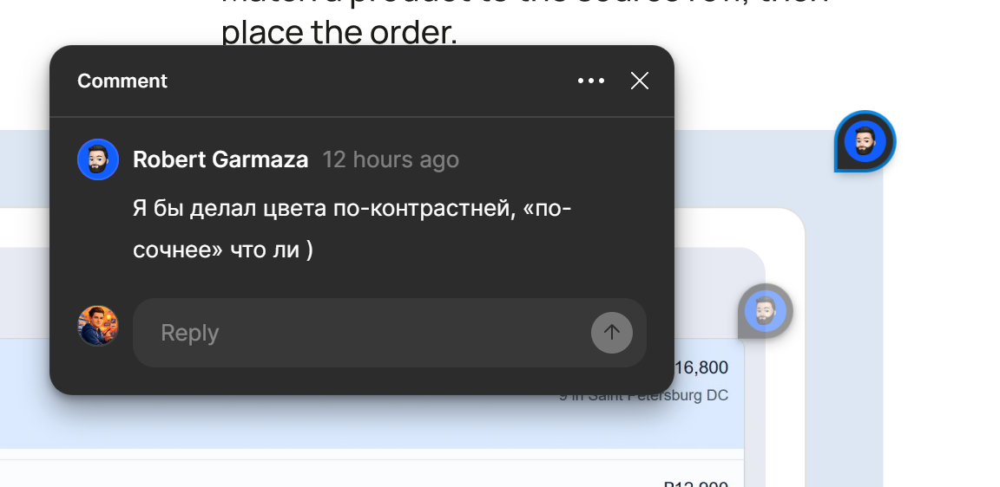
Требовалось: Усилить выразительность цветовой сцены, сохранив читаемость продукта и баланс с остальными работами.
Portal: грязноватое сочетание фона и UI
Где: Главная → Partner Portal → сочетание голубого фона сцены и серо-lavender поля интерфейса, справа возле цен.
Открыть оригинал в полном размере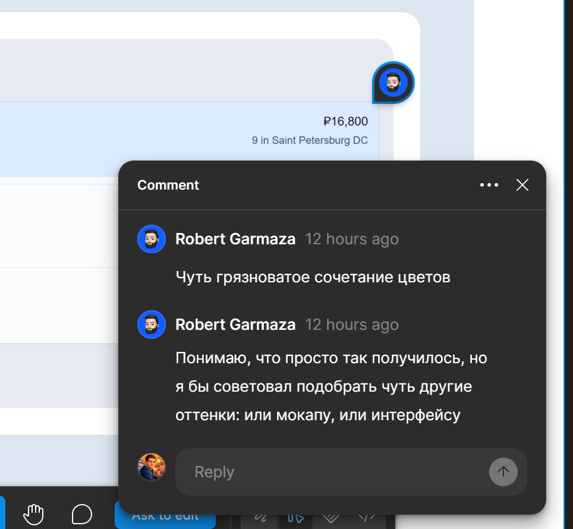
Требовалось: Подобрать совместимые оттенки сцены и её окружения. Роберт допускает изменение мокапа или интерфейса; в этом портфолио предпочтительно сохранить реальные UI-пиксели и исправить подачу.
EN: русский пример
Где: Главная EN → Partner Portal → крупная редакционная цитата «камера 4мп уличная» под 38.
Открыть оригинал в полном размере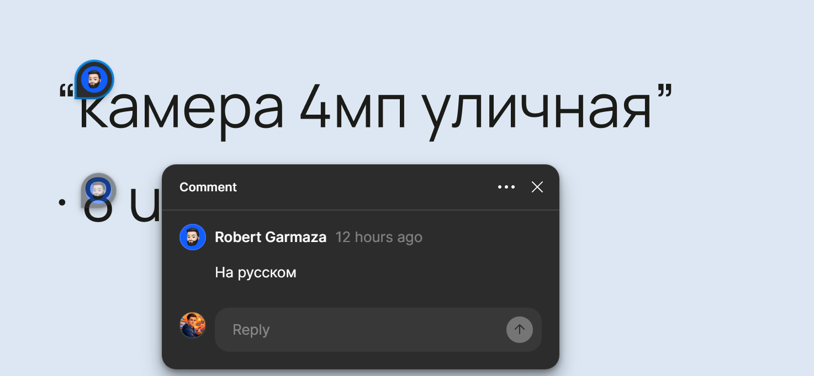
Требовалось: Локализовать редакционный пример для EN; RU оставить по-русски. Отдельно различать редакционный текст сайта и документальные поля на реальном screenshot.
Portal: мелкие элементы создают шум
Где: Главная → Partner Portal → мелкие подписи возле 38, цитата и строка «8 units».
Открыть оригинал в полном размере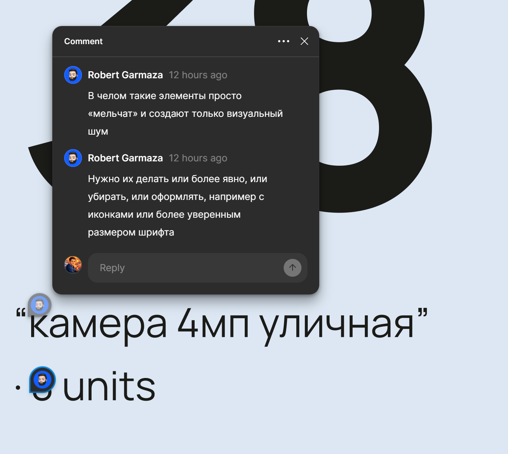
Требовалось: Убрать избыточные подписи; оставшийся контекст собрать в одну уверенную читаемую группу. Не компенсировать шум россыпью новых иконок.
Vet: подстрочник справа вместо снизу
Где: Главная → header Vet Clinic OS → One visit connects the vet, reception and owner под названием.
Открыть оригинал в полном размере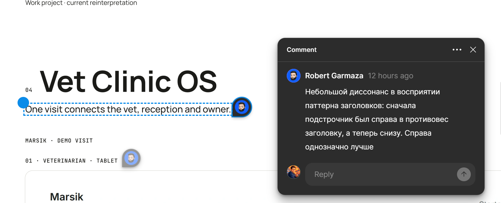
Требовалось: На desktop поставить outcome справа от заголовка, согласовав паттерн с другими проектами. На mobile сохранить естественную вертикальную последовательность.
Vet: нагромождение служебных надписей
Где: Главная → Vet → над первым UI стоят MARSик · DEMO VISIT и 01 · VETERINARIAN · TABLET.
Открыть оригинал в полном размере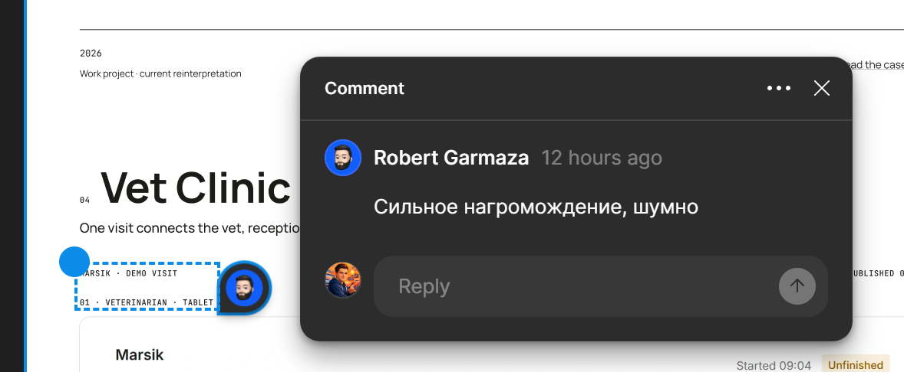
Требовалось: Убрать избыточные уровни или объединить полезный контекст в одну содержательную подпись.
Vet: saved/published избыточно
Где: Главная → Vet → отдельная строка SAVED 09:12 → PUBLISHED 09:13.
Открыть оригинал в полном размере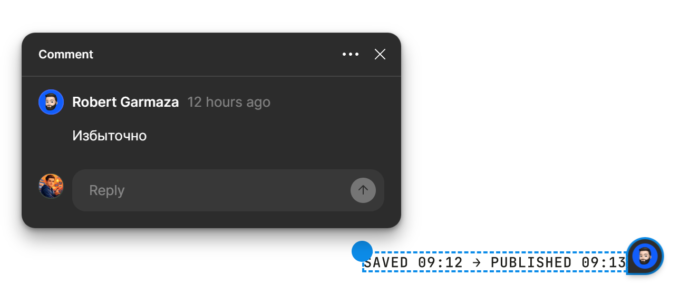
Требовалось: Убрать эту редакционную надпись из сцены либо перенести необходимый смысл в общую подпись. Реальные timestamps внутри UI не удалять механически.
Vet: тесно между соседними блоками
Где: Главная → Vet → нижний край первой панели (4.9 kg / Meloxicam) и следующая подпись 02 · RECEPTION · DESKTOP/панель.
Открыть оригинал в полном размере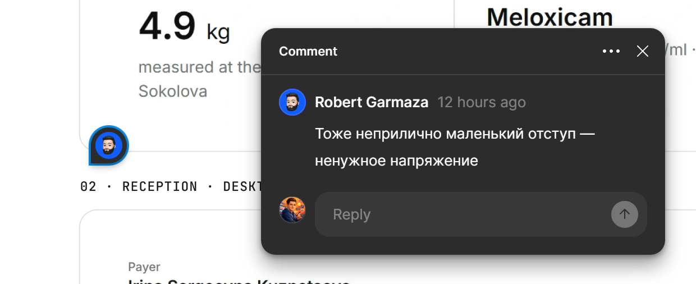
Требовалось: Увеличить и согласовать интервалы между соседними панелями/подписями, не оставлять подпись прижатой к чужому скриншоту.
Vet: интерфейс сливается с сайтом
Где: Главная → Vet → белые UI-панели на белом фоне сайта; маркер возле края карточки со статусом Unpaid.
Открыть оригинал в полном размере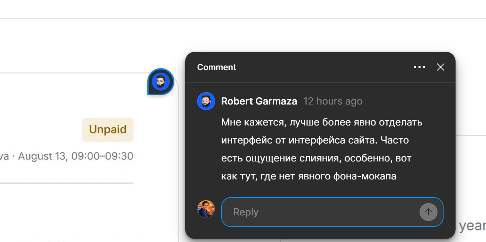
Требовалось: Отделить демонстрацию продукта фоном сцены, деликатной границей или контрастом. Проверить аналогичное слияние в других сценах.
Vet: теги мешают выравниванию верхней линии
Где: Главная → Vet → подпись 03 · OWNER · PHONE над карточкой Marsik и верхние края всех ролевых карточек.
Открыть оригинал в полном размере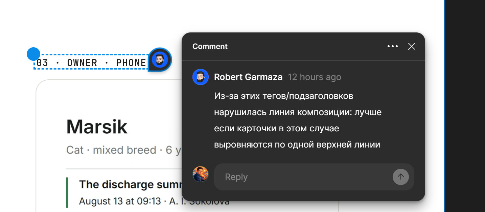
Требовалось: Вывести UI-карточки на общую верхнюю линию desktop-композиции независимо от подписей и устройств. Полезные пояснения собрать без ступенек.
Vet: собрать пояснения в одном месте
Где: Главная → Vet → итоговая строка Thirty seconds… и подпись под сценой рядом с годом.
Открыть оригинал в полном размере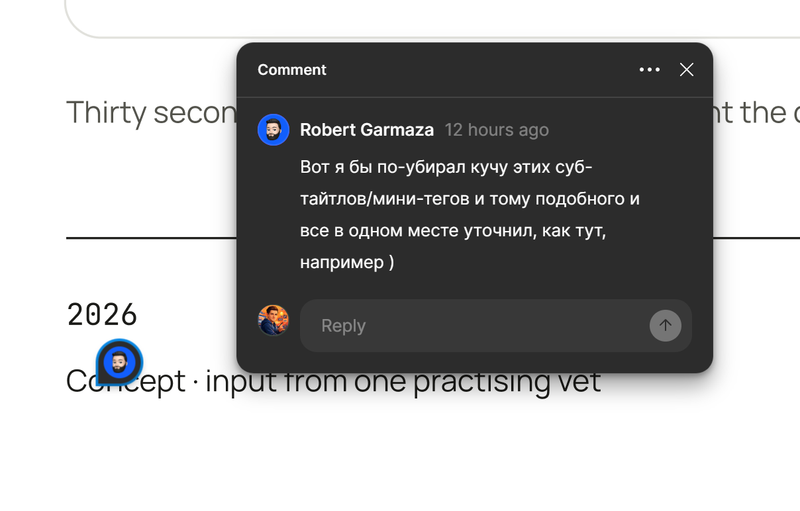
Требовалось: Собрать необходимое объяснение в одну краткую содержательную подпись и убрать дублирующие служебные строки.
Pawly: хаотичная композиция
Где: Главная → Pawly → композиция целиком: заголовок, фото передачи собаки, интерфейс Walk report справа.
Открыть оригинал в полном размере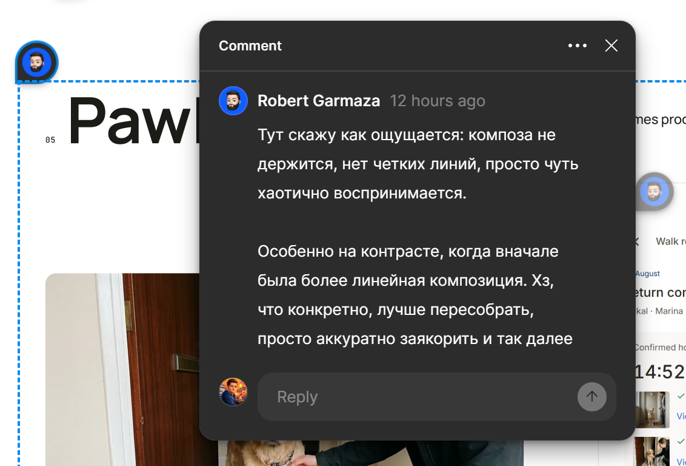
Требовалось: Пересобрать композицию на понятных осях, согласовать масштаб и положения фото/отчёта/заголовка.
Pawly: чрезмерный промежуток
Где: Главная → Pawly → расстояние между большим фото слева и карточкой Walk report справа.
Открыть оригинал в полном размере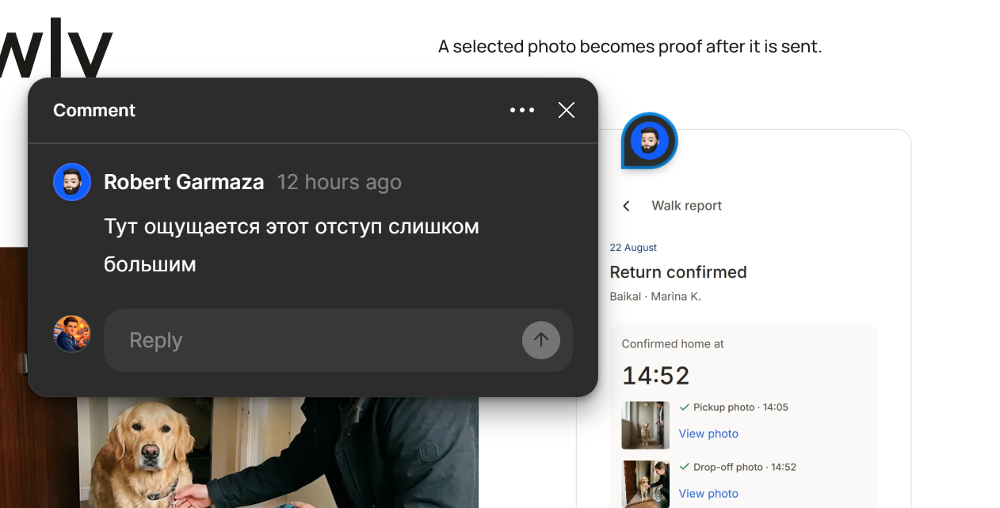
Требовалось: Сократить избыточный разрыв или изменить раскладку так, чтобы элементы составляли одну сцену.
Годы: субъективный совет не писать текущий год
Где: Главная → метаданные после Pawly/перед Selected web builds → 2026.
Открыть оригинал в полном размере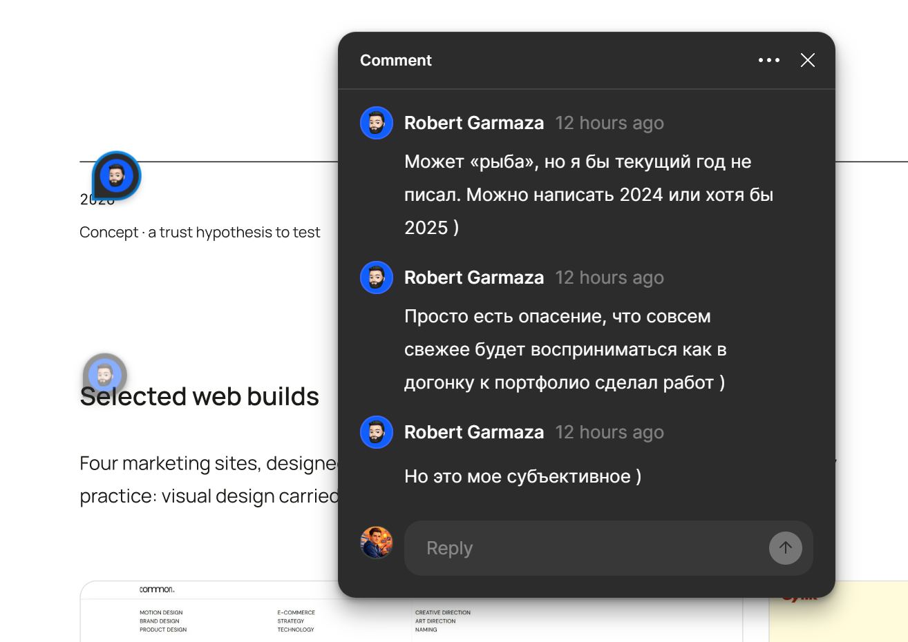
Требовалось: Оценить необходимость повторяющегося года в превью и уместность общей подачи. Допустимо убрать лишний год или показывать только подтверждённую дату; не подменять 2026 выдуманным 2024/2025.
Нижние секции: иерархия 24/32
Где: Главная → Selected web builds и следующий How I work.
Открыть оригинал в полном размере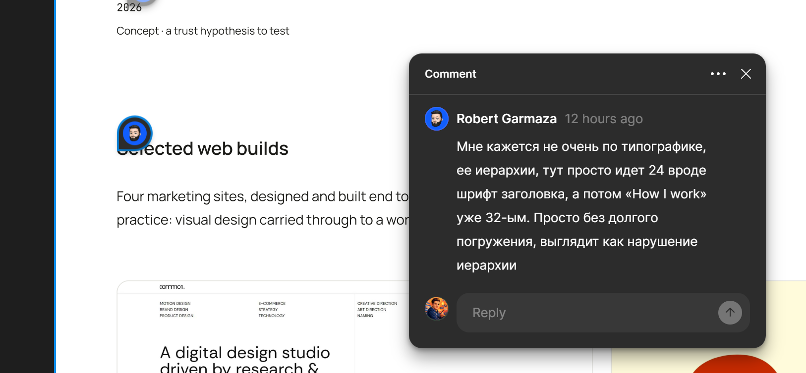
Требовалось: Привести заголовки сопоставимых разделов к ясной общей иерархии либо явно обосновать различие композицией.
How I work и контакты слишком похожи
Где: Главная → How I work непосредственно перед контактным блоком.
Открыть оригинал в полном размере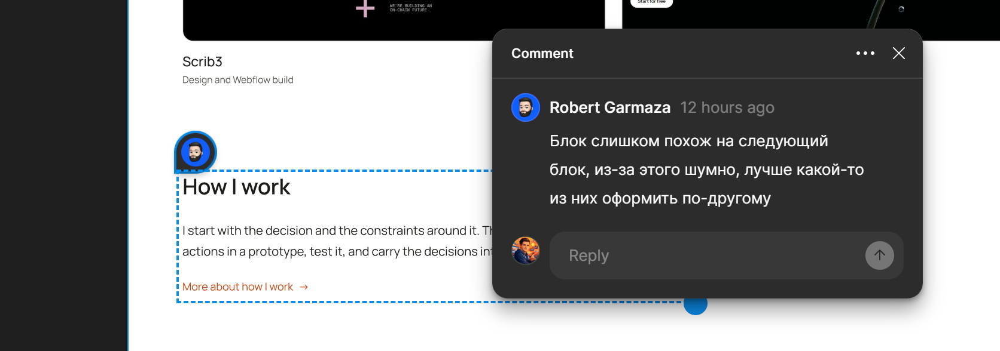
Требовалось: Изменить композицию одного из двух разделов, чтобы процесс работы и финальный контакт имели разные визуальные роли.
Контакты: нужен крупный заголовок
Где: Главная → контактный блок → небольшой Let’s talk.
Открыть оригинал в полном размере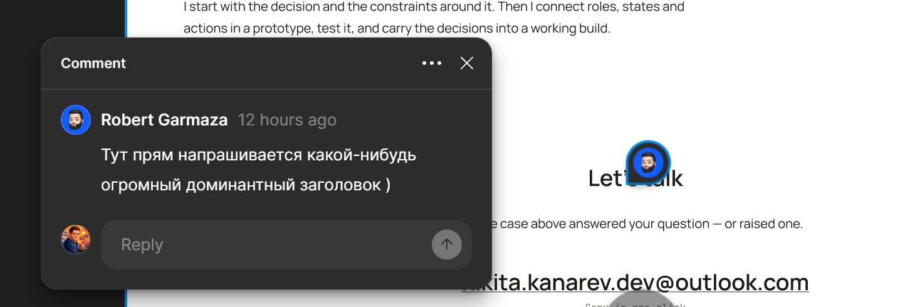
Требовалось: Сделать контактный заголовок сильным завершающим акцентом, согласовав его с email и вторичными ссылками.
Email copy: избыточная функция/подсказка
Где: Главная → контакты → email и строка Copy in one click под ним.
Открыть оригинал в полном размере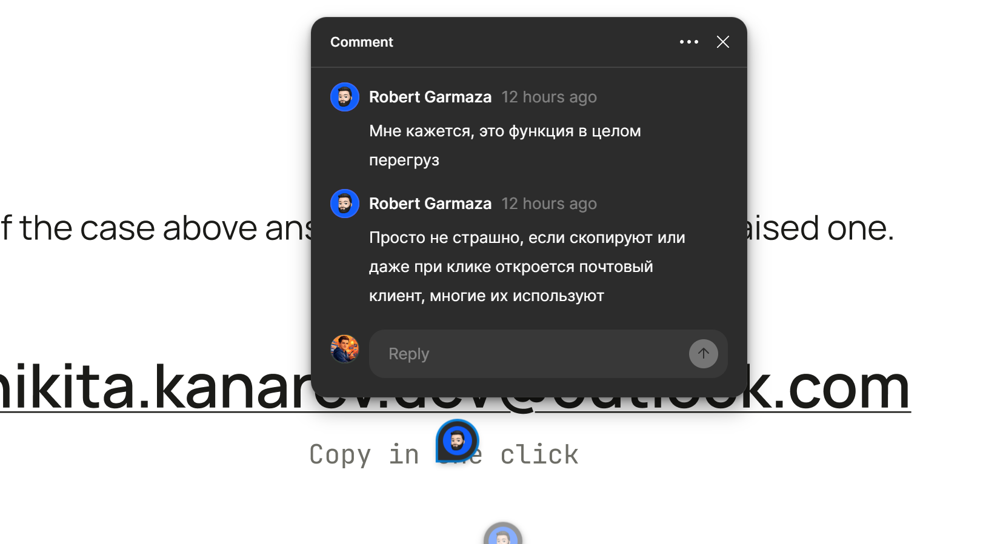
Требовалось: Упростить взаимодействие: обычный читаемый mailto/выделяемый адрес; отдельная copy-цель только при необходимости и без громкой дополнительной строки.
CV: стрелки превращаются в emoji
Где: Главная → контакты → иконка у CV (PDF).
Открыть оригинал в полном размере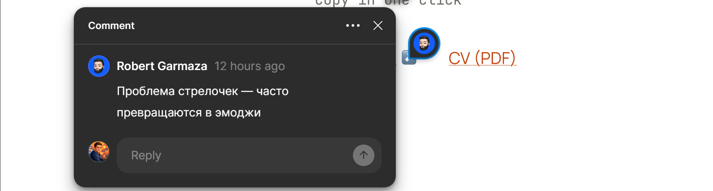
Требовалось: Убрать ненужный маркер либо использовать предсказуемую векторную иконку, проверив другие подобные ссылки.
Footer: mono ассоциируется с ИИ
Где: Главная → footer → Armenia · UTC+4 · 00:25 local time, набранное техническим моноширинным шрифтом.
Открыть оригинал в полном размере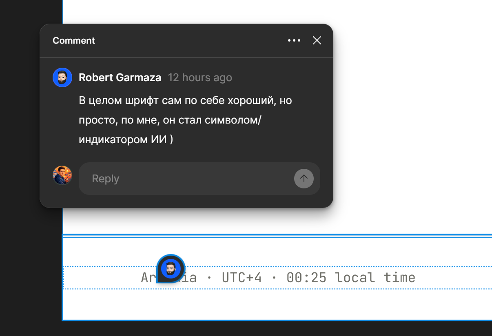
Требовалось: Убрать техническое mono-ощущение в футере/метаданных. Не возвращать географию/локальное время, если эти данные уже убраны отдельным решением владельца.
Copyright словами
Где: Главная → footer → знак © рядом с 2026.
Открыть оригинал в полном размере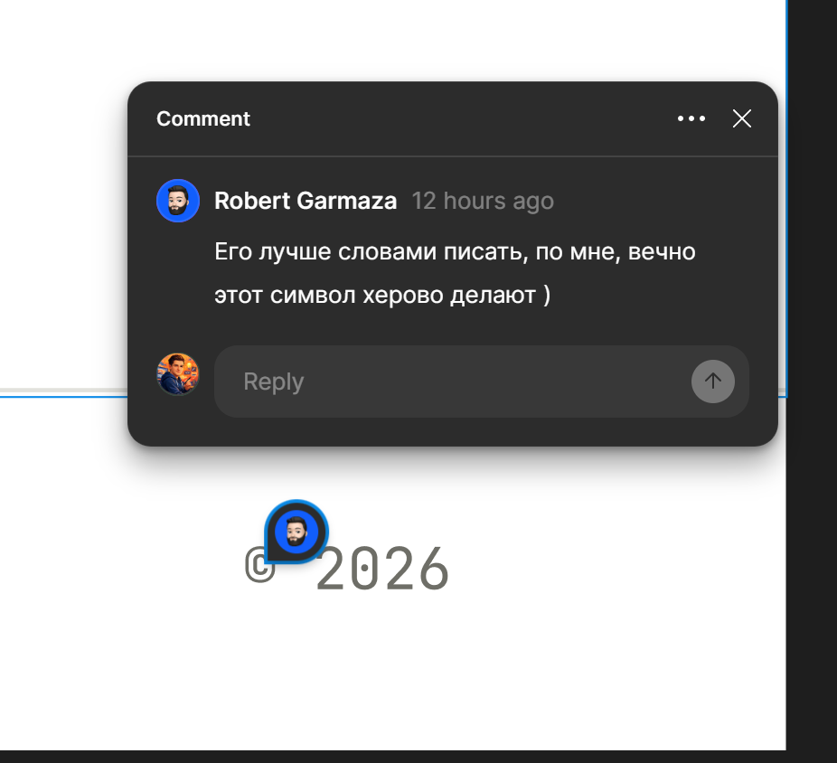
Требовалось: Использовать словесное обозначение Copyright/локализованный эквивалент и спокойную пропорциональную типографику.
Portal: сопоставимая визуальная масса превью
Где: Главная → Partner Portal → визуальная масса всего превью относительно остальных проектов.
Открыть оригинал в полном размере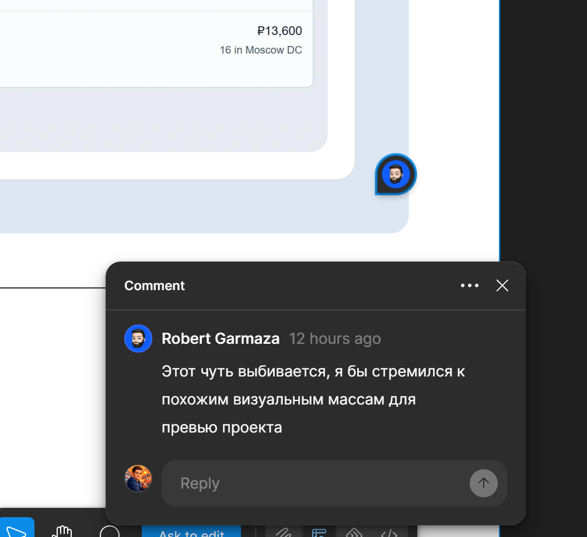
Требовалось: Согласовать воспринимаемый размер/плотность/поля сцены с другими работами, сохранив индивидуальную композицию.
Убрать лишние линии под изображениями
Где: Главная → горизонтальные разделительные линии под крупными изображениями/сценами проектов.
Открыть оригинал в полном размере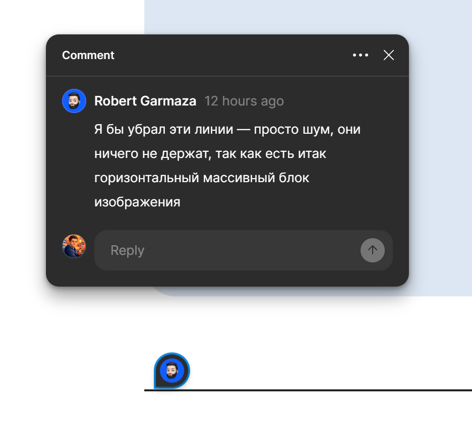
Требовалось: Убрать декоративные разделители, не выполняющие смысловую функцию; сохранить настоящие границы внутри документального UI.
CTA: постоянное подчёркивание техническое
Где: Главная → светлые превью проектов → Read the case со сплошным подчёркиванием текста и стрелки.
Открыть оригинал в полном размере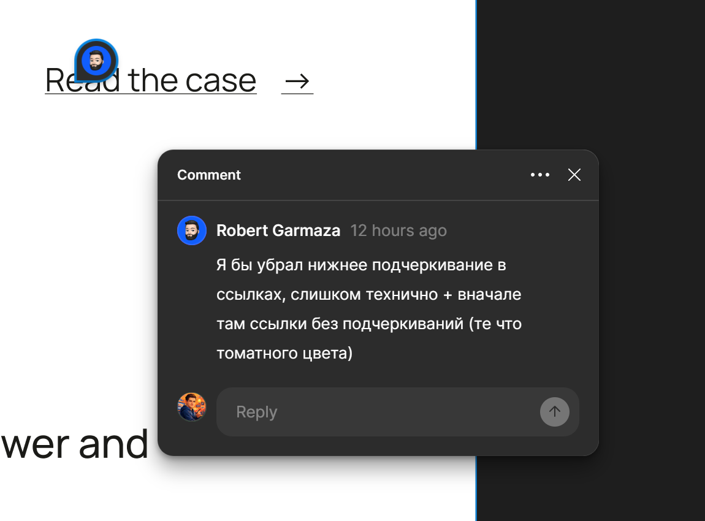
Требовалось: Согласовать оформление action-ссылок по сайту, убрать постоянную техническую линию у CTA. Сохранить понятные hover/focus и различимость inline-ссылок в прозе.
Learn: двунаправленная стрелка emoji
Где: Главная → TRASSIR Learn → Reference ↔ Learning path на синем фоне.
Открыть оригинал в полном размере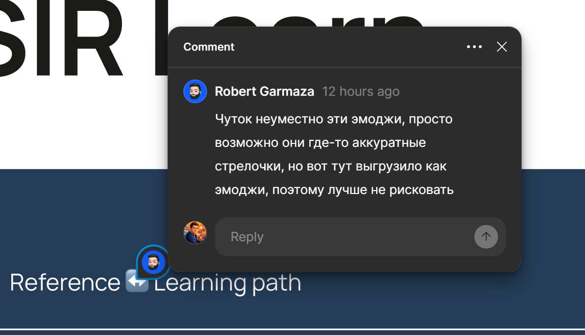
Требовалось: Убрать декоративный glyph, заменить словесной связкой или аккуратной векторной иконкой при смысловой необходимости.
Learn: тесный отступ
Где: Главная → TRASSIR Learn → большой заголовок One material / Reference… и ближайшая линия/следующий слой REFERENCE · ONVIF MATERIAL.
Открыть оригинал в полном размере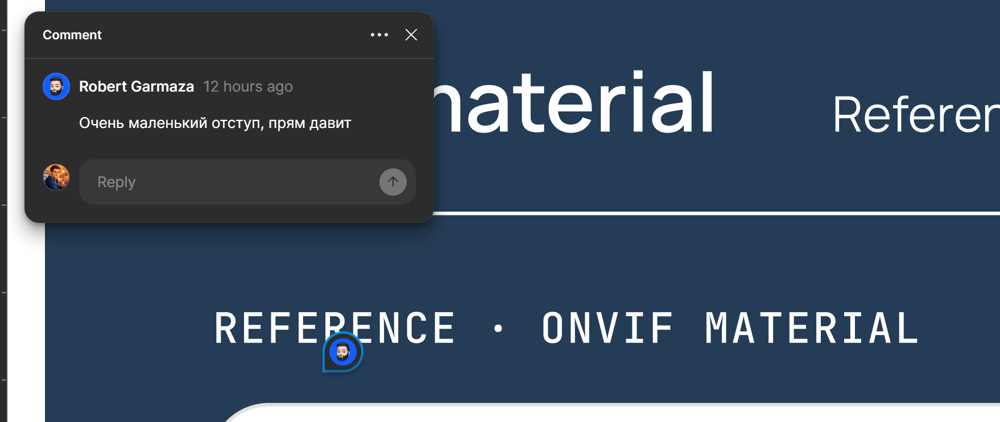
Требовалось: Увеличить воздух между крупной типографикой и соседними слоями; убрать ненужные дублирующие подписи/разделители.
Learn: избыточный номер/стрелка
Где: Главная → TRASSIR Learn → маленький номер 03 слева и диагональная стрелка ↙ справа над следующей белой карточкой.
Открыть оригинал в полном размере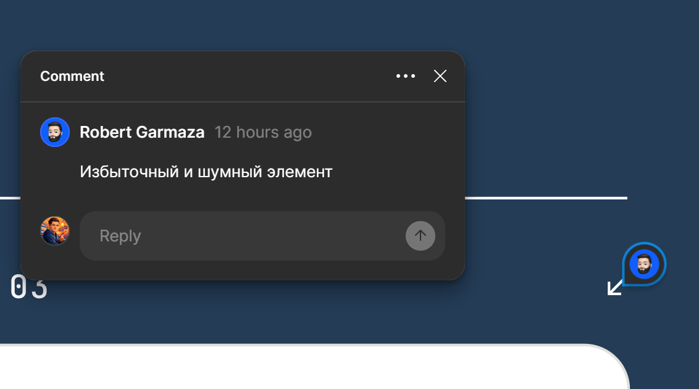
Требовалось: Убрать декоративные номер/стрелку либо существенно упростить слой, не удаляя содержательный номер реального ресурса внутри продукта.
Learn: композиционное напряжение угла
Где: Главная → TRASSIR Learn → свободный нижний/правый угол синей сцены возле края белого screenshot.
Открыть оригинал в полном размере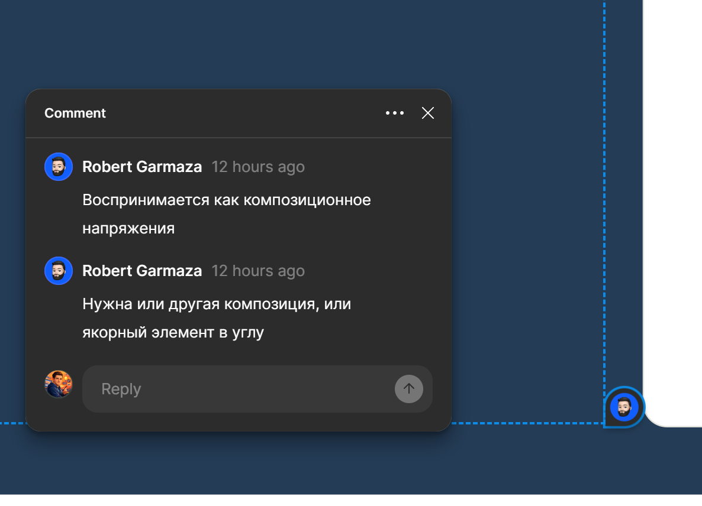
Требовалось: Пересобрать отношения screenshot и цветового поля, дать ясную опору/ось. Не добавлять бессмысленный значок только ради заполнения пустого места.